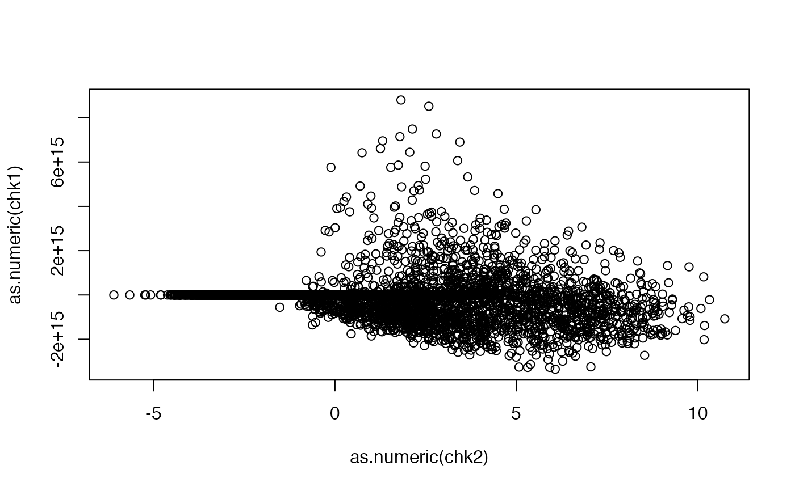

use procedure tailored to multiple responses for a fixed design matrix
Source:R/zs4manyYs.R
zs4manyYs.Rduse procedure tailored to multiple responses for a fixed design matrix
Usage
zs4manyYs(se, BPPARAM = BiocParallel::bpparam())Examples
data(geuv19xse)
sds = MatrixGenerics::rowSds(assay(geuv19xse))
print(quantile(sds))
#> 0% 25% 50% 75% 100%
#> 0.000000 2.220802 24.784532 152.732556 51865.584335
BiocParallel::register(BiocParallel::SerialParam())
mafs = maf(geuv19xse)
mins = apply(data.matrix(mcols(getCalls(geuv19xse))), 1, min, na.rm=TRUE) # some -1 values
print(quantile(mins))
#> 0% 25% 50% 75% 100%
#> -1 0 0 0 2
lk = filterCalls(geuv19xse, which(mafs>.25 & mins > -1))
lk = lk[which(sds>median(sds, na.rm=TRUE)),]
chk1 = zs4manyYs(lk)
#> some variants have MAF > 0.5, omitting
data(geuv19_samples)
namedSex = geuv19_samples$Sex
names(namedSex) = geuv19_samples[["Sample name"]]
lk$Sex = namedSex[colnames(lk)]
table(lk$Sex)
#>
#> female male
#> 46 45
chk2 <- zs4manyYs(lk) # use covariate
#> some variants have MAF > 0.5, omitting
plot(as.numeric(chk2), as.numeric(chk1))
